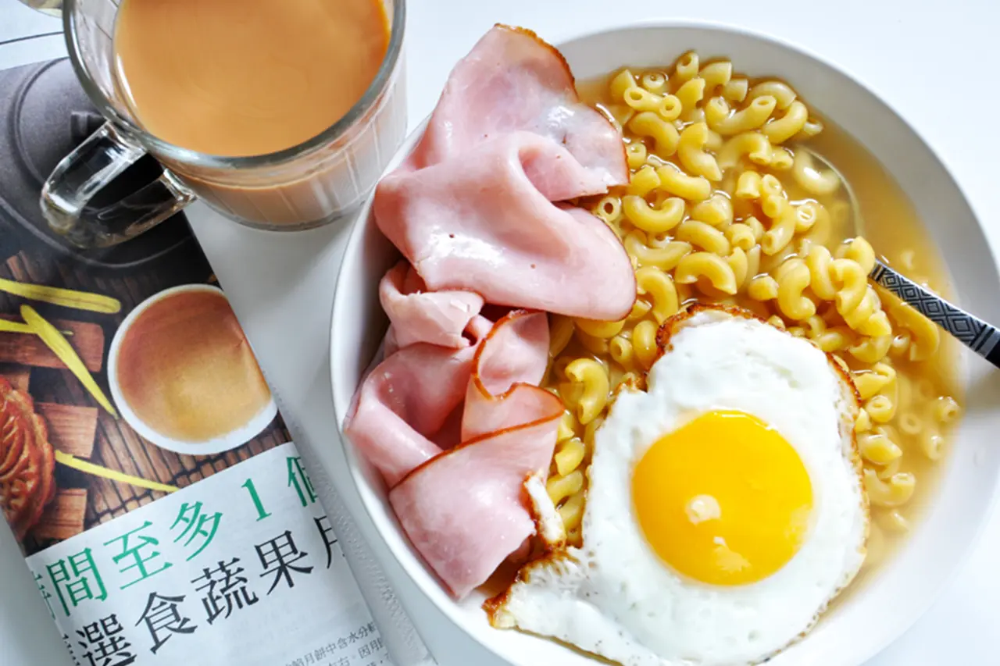

Hong Kong Macaroni Soup

A soupy meal that can be made for any meal of the day, and warms
your soul to the core!
Ingredients:
- 1 cup dry elbow pasta
- 3 cups no salt-added chicken broth
- 1 tsp light soy sauce
- 2 slices ham
- 1 egg
- 2 tsp chicken powder
- 1/2 tsp salt
Steps:
- In a pot, pour in the chicken broth and soy sauce until boil.
- In another pot, boil the pasta and cook until al dente. Drain
and set aside.
- In a pan, fry the egg until the yolk is slightly runny.
- Add in chicken powder and salt.
- Pour the cooked pasta and broth into a bowl, and top with egg
and ham.